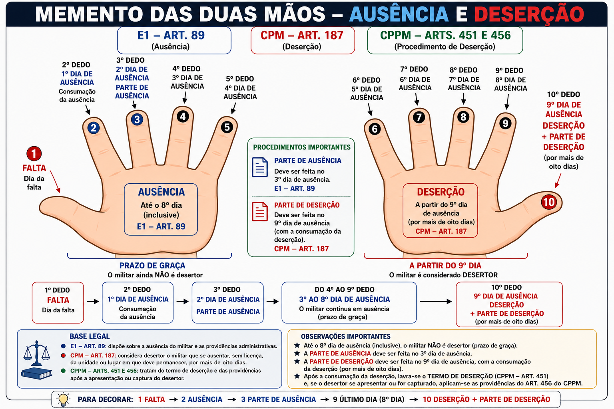

Ausência e Deserção
RDE — Art. 89 · CPM — Art. 187 · CPPM — Arts. 451 e 456
Memento das duas mãos: os dez dedos representam a sequência entre a falta, a ausência, o prazo de graça e a consumação da deserção.
Imagem — Memento das duas mãos

Clique na imagem para abrir em tamanho completo.
Memento dos 10 dedos
1º dedoFALTA
Dia da falta
Dia da falta
2º dedo1º dia de ausência
Consumação da ausência
Consumação da ausência
3º dedo2º dia de ausência
PARTE DE AUSÊNCIA
PARTE DE AUSÊNCIA
4º ao 9º dedo3º ao 8º dia de ausência
Prazo de graça
Prazo de graça
10º dedo9º dia de ausência
DESERÇÃO + PARTE DE DESERÇÃO
DESERÇÃO + PARTE DE DESERÇÃO
1 FALTA → 2 AUSÊNCIA → 3 PARTE DE AUSÊNCIA → 9 ÚLTIMO DIA DO PRAZO → 10 DESERÇÃO + PARTE DE DESERÇÃO
Sequência para revisão
Ausência — Art. 89 do RDE
Referência administrativa para a ausência do militar e as providências decorrentes.
Referência administrativa para a ausência do militar e as providências decorrentes.
Deserção — Art. 187 do CPM
Ausentar-se, sem licença, da unidade em que serve ou do lugar em que deve permanecer, por mais de oito dias.
Ausentar-se, sem licença, da unidade em que serve ou do lugar em que deve permanecer, por mais de oito dias.
Art. 451 do CPPM
Após consumada a deserção, é lavrado o termo de deserção, que integra a instrução provisória destinada à propositura da ação penal.
Após consumada a deserção, é lavrado o termo de deserção, que integra a instrução provisória destinada à propositura da ação penal.
Art. 456 do CPPM
Relaciona-se às providências processuais quando o desertor se apresenta ou é capturado, incluindo a inspeção de saúde nos casos previstos.
Relaciona-se às providências processuais quando o desertor se apresenta ou é capturado, incluindo a inspeção de saúde nos casos previstos.
Contagem
1º dedo: falta. 2º: 1º dia de ausência. 3º: 2º dia e parte de ausência. 4º: 3º dia. 5º: 4º. 6º: 5º. 7º: 6º. 8º: 7º. 9º: 8º dia. 10º: 9º dia de ausência, consumação da deserção e parte de deserção.
Material de estudo. A contagem visual foi organizada conforme o memento apresentado no curso.